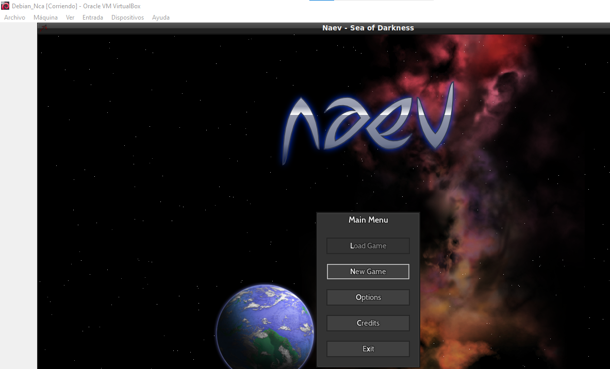

Evidencias del Proyecto
Prueba de Naev
Prueba Freeciv
Problemas con Freeciv
Instalación Minetest
Ubicación de partidas de Widelands
Archivo comprimido de partida
Prueba de FreeOrion
Creación de la base de datos y tablas
Inserción de datos en la base de datos
Instalación de SQLite Browser
Muestra de la base de datos en entorno gráfico
Hoja de datos de la base de datos
Hoja de datos de la base de datos
Muestra de la partida comprimida y sin comprimir

Contenido de la partida sin comprimir
Archivo de la partida
Archivo de la partida

Error al jugar partida sin comprimir